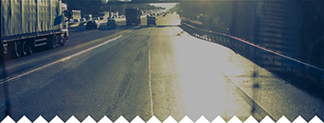

// 運転の結果を判定するもの　クイズのスコアではない。

<ons-page>
       
        <div class="space_h30"></div>
	<div class="waku" ng-controller="gameCtrl as game">
		 <h3 class="result_title" class="result_title">本日のドライバー総合結果</h3>
     <h4 id="swing_lat_dtl_dir" class="big-font">73<small>/100点</small></h4>
     <hr>
     <div class="space_h10"></div>
     <h3 class="result_title" class="result_title">反省ポイント３：左折対応</h3>
     
     <span id="swing-long-result" class="quiz_description">右左折の合図は、右左折しようとする交差点の３０メートル手前の地点でウインカー合図を出す。<br />
       次にサイドミラー、左後方を確認後、交差点の５m前には左に寄せつつ左折します。</span>
     <h4 id="swing_lat_dtl_dir" class="big-font">D<small>判定(83箇所対象)</small></h4>
     <ons-button name="kyoukan" class="btn_darkblue" onclick="kako()">問題箇所リスト</ons-button>
     <div class="space_h30"></div>
			<ons-row>
				<ons-col width="40%" align="center">
					<div class="choice">
						<button class="button button--large--cta">戻る</button>
					</div>				
				</ons-col>
         
				<ons-col width="40%" align="center">
					<div class="choice">
						<button class="button button--large--cta">次へ</button>
					</div>
				</ons-col>
			</ons-row>
		</div>
    <ons-button name="kyoukan" class="btn_darkblue" onclick="kako()">過去の診断結果を見る</ons-button>
</ons-page>